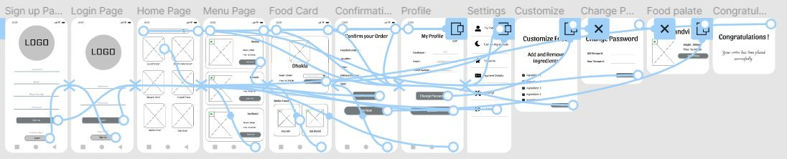
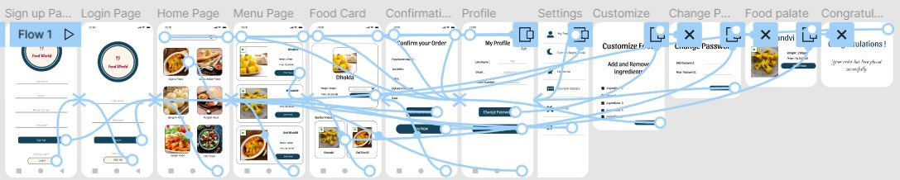

Food Menu App for Restaurant

-By Ayushi Raghave
Project overview
The Product
The problem:
Busy professionals who do not have time to cook and prefer to have meals delivered to their homes.
The goal:
Design an app for Food Menu App for Restaurant
My role:
UX designer designing an app for Food Menu App for Restaurant
My Responsibilities:
Conducting interviews, paper and digital wireframing, low and high-fidelity prototyping, conducting usability studies, accounting for accessibility, and iterating on designs.
Pain Points
Users who are working Professionals doesn’t have enough time for cooking food.
Users also doesn’t want to compromise with their health so they want to eat healthy food
They also want a lot of options in the menu to choose from a variety of options available in the menu
Due to users busy schedule they doesn’t have enough time for their family so they want an alternative for food so that they can maintain their work life balance
Paper Wireframe
Taking the effort to write out iterations of each app screen meant that the features that made it to digital wireframes were well-suited to solve customer pain points. I prioritised a quick and straightforward buying procedure for the home screen in order to save consumers time. Digital wireframe
Digital Wireframe
- As the first design process progressed, I made certain that screen designs were based on input and insights from user research.
- In addition to enabling the app to function with assistive technology, simple navigation was a significant user need addressed in the designs.

Low-fidelity prototype
I developed a low-fidelity prototype using the final set of digital wireframes. Because the major user flow I linked was Selecting and Ordering Food, the prototype could be utilised in a usability research.
High-fidelity prototype
The final high-fidelity prototype demonstrated improved user flows for selecting and ordering Food Item. It also addressed customer requirements for a Confirmation Page and additional flexibility.
Mockup
Accessibility considerations
Used icons to help make navigation easier.
Provided access to users who are vision impaired through adding alt text to images for screen readers
Several options were used to assist the user in carrying out their intended operation.
Impact:
Users may order and personalise their meal without having to go to a restaurant, choose a menu, choose a delivery time, and so on. They only need to use our service to have their favourite food brought to their home